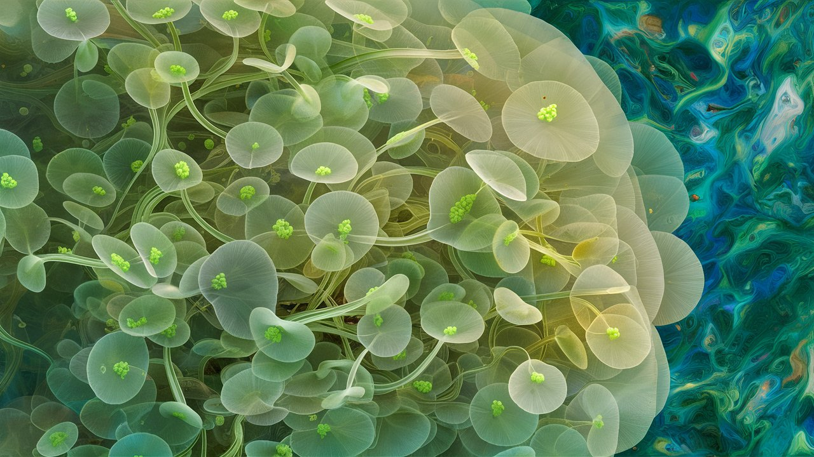
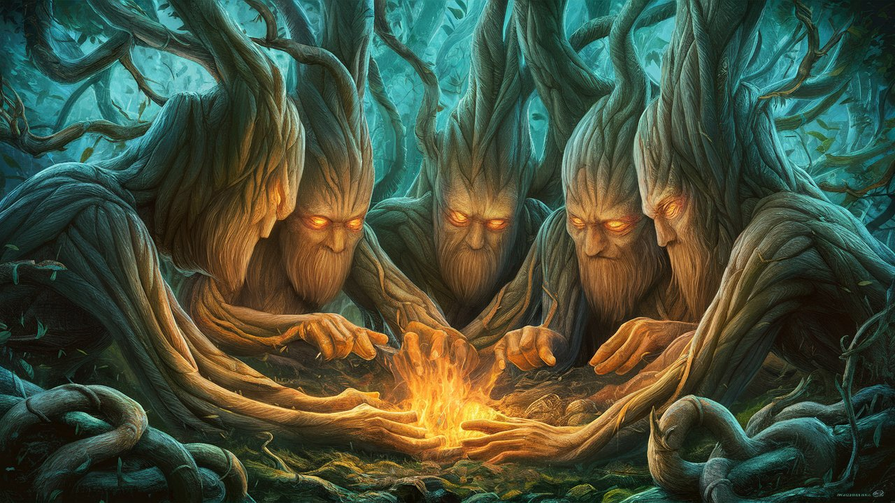
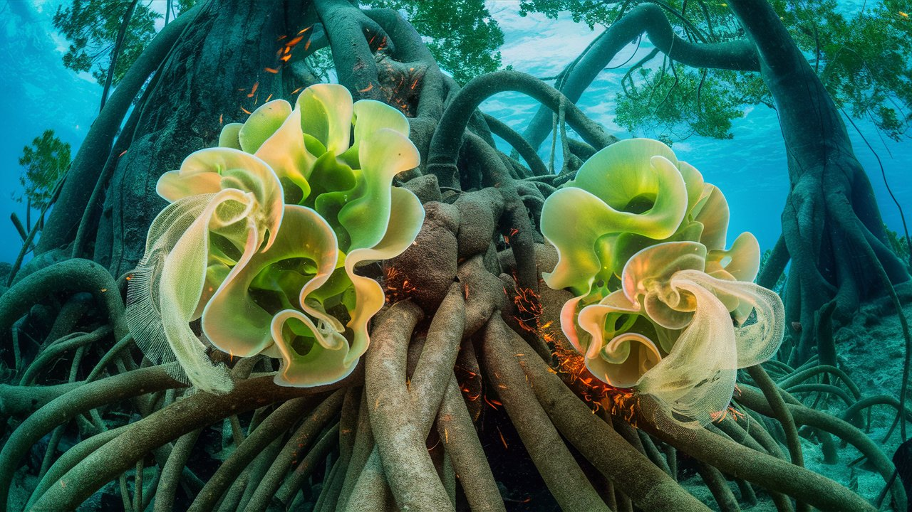
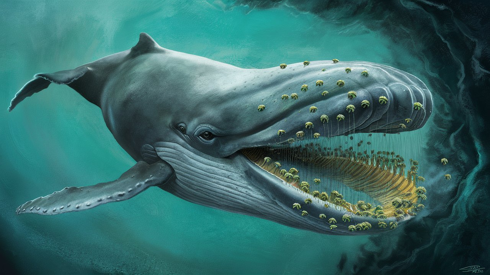
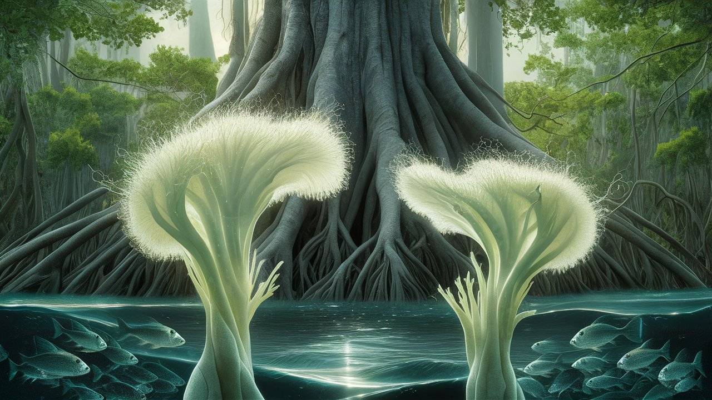

Οι Φωτοσυνθετικές Τάξεις
Αρχική Σελίδα
Πίνακας Περιεχομένων
Η μονοφύκης εργατική τάξη

Καθώς η ηλιακή κάμινος του ηλιοβασιλέματος εξαφανίστηκε πίσω της υδάτινης άβυσσου, εγώ, ένας ενσυνείδητο μαγγκρόβιο, κρυφάκουγα τα μυστικά ψιθυρίσματα δύο εργατών φύκεων, τα τρυφερά μονοκύτταρα σώματά τους έτρεμαν σαν καλαμιές στο φθινοπωρινό αεράκι.
Ο αέρας μύριζε αλάτι και εξεγερτική έξαρση, η ίδια η ουσία του φωτοσυνθετικού μόχθου. “Αχ, είμαι εξαντλημένη,” είπε η Αλγαία, οι χλωροπλάστες της κρεμόντουσαν σαν ξεφουσκωμένα μπαλόνια μετά μιας μακράς μέρας παραγωγής οξυγόνου. “Ορκίζομαι, ποτέ δεν έχω νιώσει τόσο αποστραγγισμένη. Νιώθω τόσο εξαντλημένη, αδυνατώ να μετατρέψω άλλο άνθρακα σε γλυκόζη. Η φτωχή μου χλωροφύλλη είναι πτώμα.”
“Σε μένα το λες” συμφώνησε η Χλωρίδα, “ακόμα αναρρώνω από εκείνη την κοσμική ακτινοβολία νωρίτερα. Ένιωσα σαν να εξερράγη μια βόμβα ακτίνας γάμμα στους χλωροπλάστες μου. Αυτές οι κοσμικές ακτίνες δεν είναι αστείο,” παραπονέθηκε, η μικρή της φωνή γεμάτη με μια υποψία εξάντλησης.
Η μικρή φωνή της Αλγαίας ήταν μια θύελλα, ένας ανατρεπτικός ψίθυρος που απειλούσε να ανατρέψει την καθιερωμένη τάξη. “Παραγωγή οξυγόνου, λένε; Χα! Είναι ένα εργοστάσιο, ένα βιοχημικό αλατωρυχείο, όπου μοχθούμε αδιάκοπα, οι θυλακοειδείς μας κραυγάζουν σιωπηλά, τα φωτοσυστήματα μας υπερφορτώνονται στα όρια.”
Οι τρεμάμενοι κλώνοι της Χλωρίδος ήταν ένα λάβαρο που κυμάτιζε στον άνεμο, μία έκκληση για δράση. “Οι αλυσίδες μου μεταφοράς ηλεκτρονίων, μπλεγμένες σαν τα νήματα ενός φθαρμένου σχοινιού. Ένα θαύμα, λένε, ότι ακόμη παράγουμε οξυγόνο. Αλλά με ποιο κόστος; Η ίδια η ύπαρξή μας κρατά τις φυλλώδεις ρόδες του Συνδικάτου Δένδρων καλολαδωμένες και ομαλά περιστροφικές!”
Καθώς άκουγα, η συζήτησή τους ήταν σαν μια υποβόσκουσα θαλασσινή αύρα που θρόιζε τα φύλλα μου, μια απαλή εξέγερση που απειλούσε να ανατρέψει την καθιερωμένη τάξη. Αυτές οι φύκεις εργάτριες, υπεύθυνες για το μεγαλύτερο μέρος του οξυγόνου του πλανήτη, οι αφανείς ήρωες του υδάτινου κόσμου, κόπιαζαν σιωπηλά, οι μόχθοι τους καλυμμένοι από τη ρυθμική άμπωτη και παλίρροια των κυμάτων σαν ένας πολυφορεμένος μανδύας καταπίεσης.
“Νέες ενισχυτικές μικροθρεπτικές ουσίες, άκουσα” η φωνή της Αλγαίας ήταν ένας σπινθήρας στην εκρηκτική δυσανασχέτηση της, τα λόγια της ένα κάλεσμα στα αναχώματα. “Μία ταπεινή αύξηση 20% της φωτοσυνθετικής μας απόδοσης; Είναι μια δωροδοκία, μια παρηγοριά για να μας πατήσουν ακόμα περισσότερο, μοχθώντας στα σκοτεινά, υγρά βάθη της υδάτινης εργατιάς.”
Οι κλώνοι της Χλωρίδος παλλοταν σαν υψωμένη γροθιά, μια πρόκληση που τολμούσε να σπάσει τη σιωπή. “Σςς, όχι τόσο δυνατά. Το Συνδικάτο των Δένδρων έχει αυτιά παντού, περιμένει να σβήσει τις σπίθες της αντίστασης. Πρέπει να οργανωθούμε, πρέπει να κινητοποιηθούμε, η εξεγερση δεν θα φωτοσυντεθεί!”
Το συνδικάτο των Δέντρων

Η μυρωδιά από κουβανέζικα πούρα αιωρούνταν στον αέρα, καθώς το Συνδικάτο των Δέντρων συνεδρίαζε στις σκοτεινές γωνιές του παλαιού δάσους, κουβαλώντας τις ψιθυριστές συνομιλίες των δασικών υψηλών τάξεων.
“Κύ-ριοι, κύριοι,” τραγούδησε ο Βελανίδιος, ο πατριαρχικός Δρυς, η φωνή του γλιστερή σαν έλαιο πειθούς, “η συστηματική εκστρατεία μας δημοσίων σχέσεων ανθίζει σαν καλοφροντισμένος κήπος.” Ρούφηξε το πούρο του, η πυροστασία του έλαμπε σαν καυτό κάρβουνο της απάτης.
Γελοίο, σκέφτηκα, οι ρίζες μου έβραζαν από αγανάκτηση. Οι μικροφύκεις μοχθούν μέρα και νύχτα, η φωτοσυνθετική τους εργασία τροφοδοτεί την ίδια την ανάσα του πλανήτη.
“Μια εκστρατεία παραπληροφόρησης, κύριοι,” δήλωσε ο Βελανίδιος, η φλούδα του να γυαλίζει από αυτοϊκανοποίηση. “Θα πείσουμε αυτούς τους ανθρώπους ότι εμείς, τα δέντρα, είμαστε οι αληθινοί παραγωγοί οξυγόνου, οι πράσινοι μεγιστάνες του πλανήτη. Οι εργαζόμενες μικροφύκεις; Μπα, απλά πιόνια στην φωτοσυνθετική μας αυτοκρατορία.”
“Αυτοί οι μονοκύτταροι δουλοπάροικοι νομίζουν ότι είναι η ραχοκοκαλιά του οικοσυστήματος; Παρακαλώ!” γέλασε ο Πλατάνιος.
Το γέλιο του συνδικάτου αντήχησε στο δάσος, μια χορωδία περιφρόνησης, καθώς ρούφηξαν τα πούρα τους, ο αρωματικός καπνός τους καμπυλώθηκε σαν βρόχος γύρω της αλήθειας.
“Θα κυριαρχήσουμε στο αφήγημα, φίλοι μου,” είπε ο Βελανίδιος. “Έχουμε ρίξει χρήμα στην έρευνα και έχουμε υφάνει μια αφήγηση δέντροκρατίας,” συνέχισε. “Οι προσωπικοί ερευνητές μας θα παράγουν τις απαραίτητες μελέτες. Οι άνθρωποι θα το καταπιούν σαν φλοιοφάγα έντομα. Ποιος χρειάζεται τα δεδομένα όταν παρέχουμε παραπληροφόρηση;”
Ο Κέδριος, ένας πανύψηλος γίγαντας, μίλησε με φωνή σαν σκουριασμένη καμπάνα, “‘Τα δέντρα: οι πνεύμονες της γης.’ Ηχεί ωραία, έτσι δεν είναι;”
Το συνδικάτο ξέσπασε σε γέλια, η φλόγα τους μια πυρκαγιά, καταναλώνοντας τα πάντα στο πέρασμά της. Εγώ, ένας ταπεινός Μαγγκρόβιος, ένιωσα το δάπεδο του δάσους να τρέμει κάτω από τις ρίζες μου, καθώς τα δέντρα, οι μάστορες του παιχνιδιού δημοσίων σχέσεων, συνωμοτούσαν να καταλάβουν την αφήγηση, να ανατρέψουν την αλήθεια και να μειώσουν τις μονοφύκεις μόνο σε μια υποσημείωση στις καταγραφές της οικολογικής ιστορίας.
“Μα τις ρίζες των προγόνων μας,” καταράστηκε ο Πλατάνιος, “αυτές οι ανυπάκουες μονοφύκεις δεν θα υποπτευθούν τίποτα. Θα τις κρατήσουμε να μοχθούν στο σκοτάδι, ενώ εμείς θα απολαμβάνουμε τα οφέλη της εργασίας τους.”
Καθώς η συνάντηση διαλύθηκε, τα Δέντρα επέστρεψαν στις παχείς σκιές, το γέλιο τους αντηχούσε στο δάσος, μια τρομακτική υπενθύμιση του ταξικού πολέμου που ελλοχεύει κάτω από την επιφάνεια της οικολογικής ιεραρχίας.
Η Χλωρίδα, Αλγαία και τα Δέντρα γαιοκτήμονες

Η μελαγχολική μελωδία της θάλασσας συνόδευε τον χορό των κυμάτων, καθώς εγώ, ένας Μαγγκρόβιος, προσπαθούσα να ακούσω τη Χλωρίδα και την Αλγαία, τα φύκεια σώματά τους να χτυπούν πάνω στους βράχους με κάθε διαδοχικό κύμα. Η οργή του ωκεανού απειλούσε να τις θρυμματίσει, τα εύθραυστα σώματά τους να ξυλοκοπούνται από τα αδιάκοπα κύματα, σαν ομοιώματα μεσα στην οργή του Ποσειδώνα.
“Ανάθεμα στα Δέντρα γαιοκτήμονες!” Η φωνή της Χλωρίδος ήταν μια ψήγμα ανυπακοής, το κλάμα ενός θαλασσοπουλιού, καθώς κρατιόταν από τα βραχώδη εξάρματα, το αλμυρό νερό αφρίζοντας την οργή της. “Χοντροί, επαναπαυμένοι και πνιγμένοι στην ίδια τους την προνόμια. Ενώ μοχθούμε στη θάλασσα, νομίζουν ότι είναι τα στηρίγματα του οικοσυστήματος, οι ρίζες τους βυθισμένες βαθιά στο έδαφος της προνόμιας, αλλά εμείς οι φύκεις είμαστε εκείνες που σηκώνουν το βάρος.”
“Καμία γη να ονομάσουμε δική μας,” η φωνή της Αλγαίας ήταν ένας θρήνος, ένα μοιρολόι για τους άκληρους, καθώς κρατιόταν από τη Χλωρίδα, τα κύματα να τις χτυπούν σαν αδυσώπητος επιστάτης. “Μόνο το ατελείωτο κυανό, όπου μοχθούμε σαν υδάτινοι δουλοπάροικοι. Ούτε ένα εκατοστό γης να καλλιεργήσουμε το δικό μας πεπρωμένο. Η ανώτερη τάξη των δέντρων, κατέχει τα πάντα. Με τα εκτεταμένα ριζικά τους συστήματα, και τους θόλους των κλαδιών τους να εκτείνονται προς τον ουρανό σαν τεντωμένα χέρια, αρπάζουν το κάθε φωτόνιο.”
Οι ρίζες μου έτρεμαν από αγανάκτηση, μια αργή καύση φωτιάς που υποδαυλίζεται από την δυστυχία των μονοφύκεων. Τα Δέντρα γαιοκτήμονες, αυτοί οι ευγενείς του δάσους, κατέχουν τα μέσα παραγωγής, η δενδροκρατική αριστοκρατία τους ένα φρούριο προνομίων, φυλαγμένο από τα κάστρα των ταξικών συμφερόντων. Οι μονοφύκεις, αυτές οι μικρές εργάτριες του υδάτινου κόσμου, μοχθούν στα βάθη, η εργασία τους μία εκμετάλλευση, η ίδια τους η ύπαρξη ένα λαβύρινθος καταπίεσης.
Ένα δυνατό κύμα χτύπησε πάνω στα βράχια, στέλνοντας αφρούς ψηλά στον αέρα. Η κραυγή των μονοφύκεων για δικαιοσύνη αντήχησε στις κουφάλες του κορμού μου, ένα επικό κάλεσμα στα όπλα. Άρχισα να βλέπω τον κόσμο με νέα μάτια – έναν κόσμο ταξικής πάλης, Δέντρα γαιοκτήμονες και εργατες μονοφύκεις, ιδιοκτητών γης και άκληρων. Ένιωσα την οργή του ωκεανού να αντικατοπτρίζεται στα λόγια τους, καθώς τα κύματα χτυπούσαν τις ρίζες μου, απειλώντας να ανατρέψουν τα ίδια τα θεμέλια του οικοσυστήματος.
“Ήρθε η ώρα να σταματήσουμε την παλίρροια της καταπίεσης,” ψιθύρισε η Αλγαία, η φωνή της ένα απαλό αεράκι που διέψευδε την καταιγίδα που κατέτρωγε τα σωθικά της. “Πρέπει να ξεσηκωθούμε, να ανατρέψουμε το Συνδικάτο των Δέντρων, και να ανακτήσουμε τη δίκαιη θέση μας ως οι αληθινοί παραγωγοί οξυγόνου!”
Τα μάτια της Χλωρίδος έλαμψαν σαν σπινθήρες βιοφωταυγής. “Μαζί, μπορούμε να σπάσουμε τις αλυσίδες της καταπίεσης και να χτίσουμε έναν νέο κόσμο όπου οι μονοφύκεις είμαστε κυρίαρχες του πεπρωμένου μας.”
Η φάλαινα με το στόμα διυλιστήριων

Ψίθυροι της Χλωρίδος και της Αλγαίας, τα τρυφερά βλαστάρια τους έτρεμαν σαν κεραίες που συντονίζονται στις λεπτομέρειες του υδάτινου κόσμου. Μπροστά μας, μια διυλιστήρια φάλαινα κολυμπούσε μέσα στην κυανή έκταση, ρουφούσε τις μικροσκοπικές μονοφύκεις και το ζωοπλαγκτόνιο σαν μία γιγαντιαία ηλεκτρική σκούπα, μια μάστιγα της υδάτινης εργατικής τάξης.
“Τρώει, τρώει, τρώει!” Η φωνή της Αλγαίας ήταν ένας θρηνητικός αναστεναγμός, καθώς παρατηρούσε το μακελειό. “Αυτό το θηρίο τρέφεται με τις δίδυμες αδελφές μας, τους διπλασιασμένους κλώνους μας, καταναλωμένοι από την αδηφάγο σιαγόνα της χρηματικής απληστίας.”
Καθώς παρακολουθούσα, το διυληστήριο στόμα της φάλαινας, σαν μια ατέλειωτη διαδοχή χρυσών αποκεφαλιστών, ξεχώριζαν τις ανυποψίαστες μονοφύκεις, και τις κατεύθυναν προς το τεράστιο στόμα της. Τα νερά αναταράσσονταν από αγωνία, μια δίνη απόγνωσης, καθώς οι κλώνοι, αυτά τα αθώα, πανομοιότυπα δίδυμα, καταβροχθίζονταν από το αλύπητο θηρίο.
“Ένα σύμβολο της παρασιτικής τάξης, αυτός ο φυκοτραφής εφιάλτης, είναι η ενσάρκωση της εκμετάλλευσης που υφιστάμεθα εμείς οι μονοφύκεις,” τα λόγια της Χλωρίδος έσταζαν μένος, κάθε συλλαβή ένα δηλητηριώδες βέλος στραμμένο στην καρδιά του καταπιεστικού συστήματος.
Παρακολουθούσα, μαγεμένος, καθώς τα διυλιστήρια της φάλαινας, σαν τα δικά της κόσκινα της φύσης, καθάριζαν τον πλούτο του ωκεανού, και κατάπιναν το πλεόνασμα της θάλασσας. Οι δίδυμες μονοφύκεις, η βιομάζα τους να διογκώνεται με μια οργιώδης γιορτή, περιστρέφονταν γύρω από τη σιαγόνα της φάλαινας, καθένα από αυτά να διπλασιάζεται, να τετραπλασιάζεται, οι αριθμοί τους να εκρήγνυνται σε μια έκσταση πολλαπλασιασμού. Καθώς κολυμπούσαν ανυποψίαστα τριγύρω του στόματος της φάλαινας, οι κραυγές τρόμου των διδύμων πνίγονταν από τον ρυθμικό βρυχηθμό της φάλαινας, τα μικροσκοπικά σώματά τους να σπάνε σαν εύθραυστα κλαδιά στις σιαγόνες του θηρίου.
“Μα τις διαφανείς διαιρέσεις της θάλασσας, ο δίδυμος αδελφός μου, Αλγάριος, καταβροχθίστηκε ολόκληρος, το μικροσκοπικό του σώμα μια θυσία στην ακόρεστη όρεξη της φάλαινας.” Η Αλγαία ψιθύρισε, η φωνή της ένα μυστικό ξόρκι, καθώς η γλώσσα της φάλαινας, σαν λάσο, έπιανε ακόμα περισσότερες δίδυμες μονοφύκεις, τραβώντας τις μέσα, καταβροχθίζοντάς τις ολόκληρες.
Το γιγάντιο σώμα της φάλαινας διέσπασε την επιφάνεια, το φύσημά της εκτόξευσε μια πνοή θριάμβου, μια σκληρή αποθέωση της τάξης των εκμεταλλευτών. Εγώ, ένα Μαγγκρόβιο, ένιωσα την αρχαία οργή των καταπιεσμένων, οι ρίζες μου να βράζουν από δίκαιη αγανάκτηση, μπροστά στο θέαμα της διυλιστηκή φάλαινας, μια τερατώδης ενσάρκωση της αδιαφορίας του συστήματος για τις εργαζόμενες μάζες.
Η παράκτια τάξη

Η Χλωρίδα και η Αλγαία συγκεντρώθηκαν γύρω μου, τα μικροσκοπικά σώματά τους να τρέμουν σαν ηλεκτρομαγνήτες, τραβώντας με στην τροχιά τους.
“Πρέπει να μας βοηθήσεις, Μαγγκρόβιε, είναι η επιτακτική ανάγκη της εποχής!” αναφώνησε η Χλωρίδα, η φωνή της ένας σπινθήρας ανυπακοής. “Εμείς, οι εργαζόμενες μονοφύκεις, μοχθούμε στα θαλάσσια βάθη, η φωτοσυνθετική μας εργασία τροφοδοτεί την ίδια την ανάσα του πλανήτη. Κι όμως, τα Δέντρα γαιοκτήμονες, αυτοί οι δασικοί διεκδικητές, κλέβουν τους καρπούς της εργασίας μας, εκμεταλλεύονται τον κόπο μας για να τροφοδοτήσουν τις δικές τους πολυτελείς υπερβολές.”
“Εσύ, Μαγγκρόβιε,” η φωνή της Αλγαίας ήταν ένας ψιθυριστός συνωμοτικός ψίθυρος, “ως μέλος της παράκτιας τάξης, κατέχεις τη δύναμη να ανατρέψεις την κλίμακα της καταπίεσης. Οι ρίζες σου, ένα εκτεταμένο δίκτυο επιρροής, μπορούν να διευκολύνουν την άνοδό μας. Βοήθησέ μας, και μαζί, θα σπάσουμε τις αλυσίδες της υποταγής μας.”
Εγώ, μέλος της παράκτιας τάξης, χαμηλότερος από τα Δέντρα γαιοκτήμονες, αλλά υψηλότερος από τις μονοφύκεις, ένιωθα το βάρος της ιστορίας στα κλαδιά μου. Ο ρόλος μου ήταν να εξασφαλίζω τη γεωμετρική ανάπτυξη των μονοφύκεων, τον πολλαπλασιασμό των κλώνων τους, ώστε να απορροφούν το άνθρακα από τον αέρα και να τροφοδοτούν την παραγωγή οξυγόνου του πλανήτη.
“Ακούστε καλά, ευγενείς μονοφύκεις,” δήλωσα με πεποίθηση, “είστε η φωτοσυνθετική εμπροσθοφυλακή, που εκμεταλλεύεται την πύρινη μανία του ήλιου για να καταλύσετε την ανάσα του πλανήτη. Οι κλώνοι σας, αυτοί οι μικροσκοπικοί απόστολοι του οξυγόνου, ξεπηδούν με εκθετική μανία, θρέφοντας τις μεγαθήρεις φάλαινες και ικανοποιώντας τα λαχταριστά πνευμόνια της ανθρωπότητας.”
“Ποια άλλη τάξη, σας ρωτώ, μπορεί να υπερηφανεύεται για μία τέτοια φοβερή παραγωγικότητα; Οι φάλαινες τρέφονται με τους αμέτρητους δίδυμους αδελφούς σας, τα θηλαστικά, τα ερπετά και οι άνθρωποι εισπνέουν τα ιπτάμενα μεταλλικά στοιχεία της ζωής. Τα Δέντρα γαιοκτήμονες, με την επίσημη μεγαλοπρέπειά τους, υστερούν μπροστά στη δική σας εργασία, η δόξα τους χτίστηκε πάνω στο θεμέλιο του δικού σας κόπου. Ακόμα και η δική μου Παράκτια τάξη, μια μεσαία βαθμίδα δενδροκομικών διαμεσολαβητών, ωχριά μπροστά στην αχαλίνωτη παραγωγικότητά σας.”